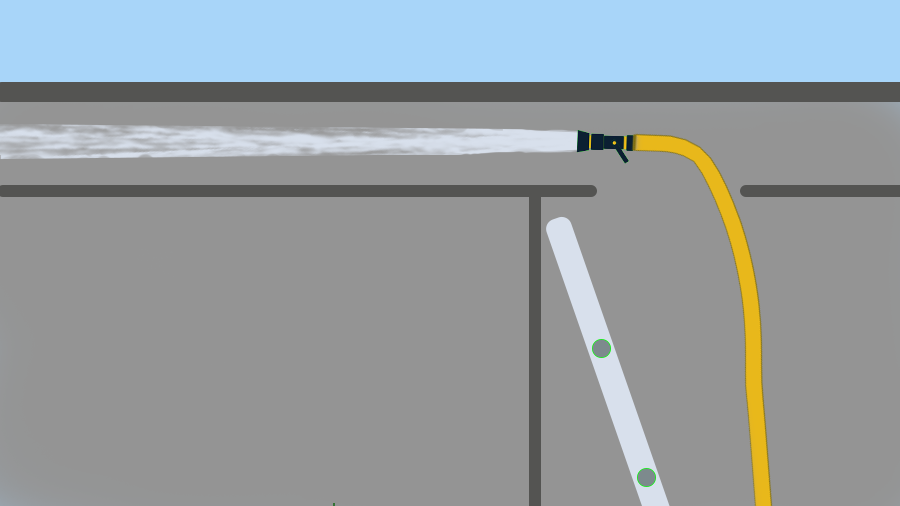

By
Bob BourgeoisBob is a former District Fire Chief (FF 40 yrs), former LLC owner (public safety case studies), BSME Columbia Univ
With input from
Joe MaloneyJoe is a former District Fire Chief (FF 32 yrs, 19 as District Chief), 1st draft 22Jul21 Latest rev 02Aug24 Feedback/Qs roomfiresetc@gmail.com
Automatic nozzles An automatic nozzle has a throat that automatically adjusts to accomodate different flow rates.
are the safest, most effective, most versatile nozzles for fire attack.
Selectable-flow combination nozzlesA selectable-flow nozzle has a throat that can be manually adjusted to accomodate different flow rates.
are a close second.
They both combine the benefits of wide gpm operating rangesA nozzle's gpm operating range is the range of flows that will produce a usable stream. Precise limits are arguable, but comparisons are valid.
with the benefits of adjustable spray patterns.Straight stream, narrow cone, wide cone etc
Automatics are also the easiest to use (if you don’t overthink things).
Fig. 3.1 Eight nozzle operating ranges
Wide operating ranges can help top and bottom.
The bottom of a nozzle's range is the minimum flow needed to produce a
usable stream.A usable stream is one that has enough reach but not too much reaction force.
If a kink reduces the flow below the minimum, the line may be useless.
Fig. 3-2 Kinks ruin your stream
Your
safety marginSee GPM, Safety Margins etc
against kinks is the gpm difference between the bottom of the range and your target flow. Fixed-flow nozzles have much smaller margins.
Headroom at the top of the range means that on those rare occasions when you need more water or more reach, you simply flow more water.
This confident flexibility can ease the GPM anxiety that causes many teams to always flow big water. Using 90-100 GPM to attack a 16' x 16' x 8' room gives you a generous safety margin. Double the room size and you still have a good margin. If you’re routinely flowing much more than 100 GPM for residential room fires, you might want to consider flowing less.
In addition to easing water supply needs (and water supply anxiety), a lower flow rate can cut FF exertion, cut air use, make turning the corner easier, and generally help with nozzle placement. Many good stops have been made by nozzles held in awkward orientations (e.g.
above the joists
for a cockloft fire). In situations like that, flowing five or six times the required water makes the job harder and might rob you of speed and adaptivity.
Etc
Fig. 3-3 Complexity begs versatility
Fire attack with an automatic nozzle or selectable-flow nozzle is mostly about
wetting the burning fuelWetting the fuels chokes off the supply of pyrolysis gases. See Room Fires etc
surfaces—just like fire attack with a smooth-bore or other fixed-flow nozzle.
Straight streams do most of the work in American firefighting but spray patterns have high value in some important situations:
Easier to protect people directly threatened by flame (and more effective)
Easier to power vent a door, window, or even a narrow hallway
Easier to apply water at
sharp angles
Easier to cool a tank
Easier to wet broad surface areas
Easier to wet the dozens/hundreds of surfaces in a trussloft
Questions
What does “easier” mean in this context?
Requires less skill, less exertion, less attention. More likely to succeed.
What are the drawbacks of automatic nozzles?
Compared to smooth bore, they require more maintenance and they are more likely to be partly clogged by water-born debris. Compared to other adjustable-pattern (combination) nozzles, their maintenance is more involved. Their cost is likely to be higher than both.
How is the flow adjustment actually made?
GPM can be adjusted at the pump by changing the discharge pressure or at the nozzle by changing the position of the shutoff handle. Each has its pros and cons but a team should probably choose one method and use it most of the time because coordination is required for both.
How should pressure calculations be done?
Field calculations are not a good idea because they are needless and wildly inaccurate.
Automatic nozzles operate in a range of nozzle pressures that is smaller than the uncertainty in friction loss estimates and much smaller than the actual range of friction losses. Available calcs can't deal with that.
A better approach is to do some easy testing. Find a good starting pressure for each of your preconnects and then practice adjusting up and down. You’ll get a feel for your situation and be able to describe it to others. Do the same for other layouts if you want.
Don't overthink it.
What are some other situations when a nozzle might be used "in an awkward orientation”?
Nozzle placed inside a pipe chase, shooting up or down
Nozzle placed inside a bay of a balloon-framed wall, shooting up or down
Nozzle placed behind a knee wall, shooting parallel to the wall
Nozzle held through a window, wetting the inside of the wall that the window is in.
Describe “applying water at sharp angles”.
At its widest setting, a spray pattern is required to throw water at least 50 degrees off the centerline. A user can simply tilt the nozzle and apply water at more than 90 degrees. They can easily hit all four walls of a room while standing in the doorway or outside of a window.
When chasing fire through the voids of a building, the wide pattern is an option to quickly wet inaccessible surfaces behind kneewalls, in cocklofts, etc.
Fig. 3-3 Applying water at a sharp angle.
If your calculation is no more accurate than my guess, you should learn how to guess.
Adaptivity is priceless in a firefighter's work environment.